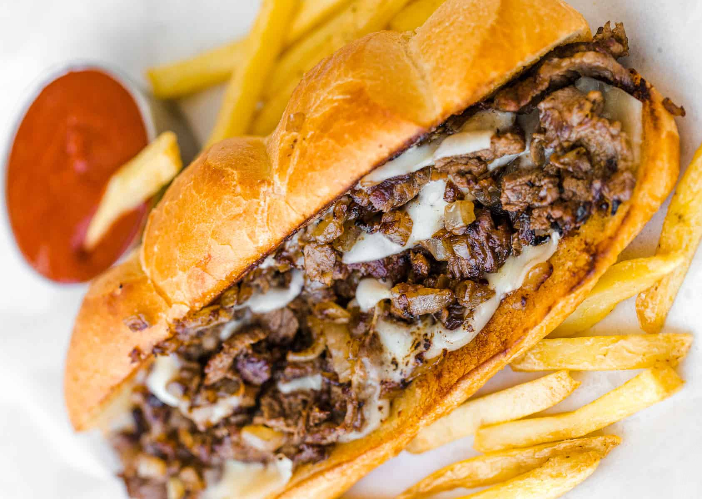

Philly Cheesesteak

The BEST Cheesesteak You'll Ever Eat
This is an easy, delicious sandwich recipe that can be done in only 30 minutes.
You can cook on a griddle, which I personally recommend, a stove-top, or flat cooktop.
Ingredients
Serves 4
- 1 lb Ribeye Steak (trimmed and thinly sliced)
- 1/2 tsp Seasalt
- 1/2 tsp Black Pepper
- 2 tbsp Oil (i.e. Olive, Canola, whatever you prefer)
- 1 White Onion (diced)
- 1 Green Bell Pepper (diced)
- 8 Slices of White American Cheese
- 4 Hoagie Rolls (sliced 3/4 through)
- 2 tbsp Unsalted Butter (softened)
- 1 Garlic Clove (pressed)
- 2 tbsp Mayonnaise
Instructions
- Slice hoagie rolls 3/4 of the way through with a serrated knife. Dice onions
and thinly slice beef.
- In a small bowl, stir together 2 tbsp softened butter with 1 pressed garlic clove. Spread garlic butter
onto the cut sides of the 4 hoagie rolls. Toast the buns on a griddle, stove-top, or flat cooktop on medium
heat until golden brown, then set aside.
- Add 1 tbsp of oil to the pan/cooktop and sautee the diced onions and green pepper until caramelized then
transfer to a bowl.
- Increase to high heat, adding 1 tbsp of oil, and spread the thinly sliced steak in an even layer. Let brown
for a couple of minutes undisturbed, then flip and season with 1/2 tsp salt and pepper. Sautee
until steak is fully cooked through, then stir in the caramelized onions and green bell peppers
- Divide into 4 even portions and top each with 2 slices of cheese and turn off the heat so the cheese will melt without
overcooking the meat.
- Spread a thin layer of mayo on the toasted side of each roll. Working with one portion at a time, place a toasted bun
over each portion and use a spatula to scrape the cheesy beef into the bun as you flip it over. Serve warm.
Note:
This recipe was referenced and slightly altered from here.
Return to home.